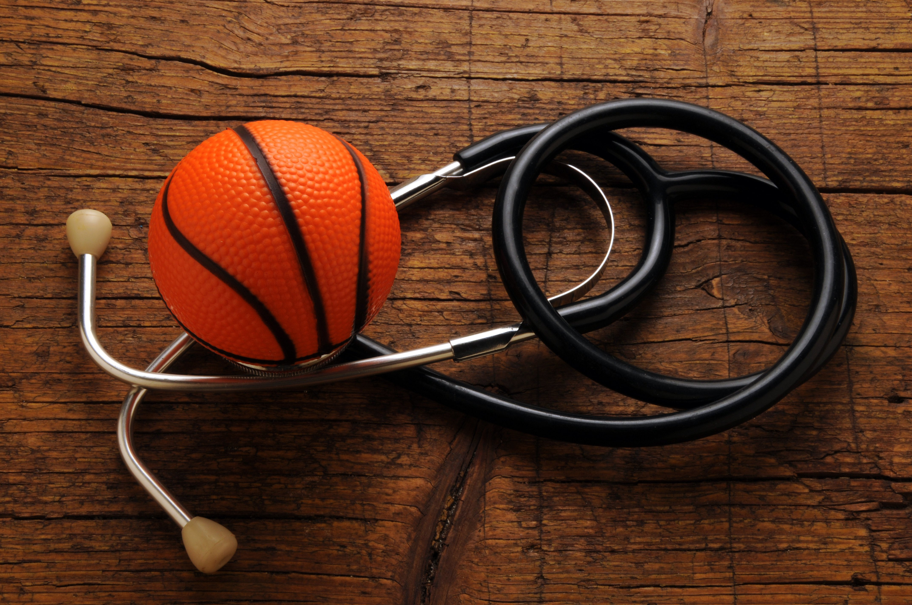

L'Histoire du Basketball
Le basketball a été créé par James Naismith, un Canadien, en 1891. Il est pratiqué par 450 millions de personnes dans le monde. La NBA, la ligue la plus célèbre, a été fondée en 1946 à New York. Elle compte actuellement 30 équipes, dont des célèbres comme les Lakers et les Celtics. La saison régulière va d'octobre à avril, avec chaque équipe disputant 82 matchs. Les huit meilleures de chaque conférence vont aux séries éliminatoires, qui se déroulent en élimination directe. La NBA a produit des légendes comme Michael Jordan et LeBron James. Chaque année, il y a un All-Star Game et d'autres événements comme le Slam Dunk Contest. La ligue a une large audience internationale et est engagée dans des initiatives sociales.

La santé et le Basketball
La pratique régulière du basketball offre des avantages significatifs tant sur le plan physique que mental. Sur le plan physique, le basketball constitue un entraînement complet du corps, renforçant la musculature, favorisant la flexibilité et l'endurance, et contribuant au maintien d'un poids corporel optimal. Il stimule également le développement cardiovasculaire en renforçant le cœur et en améliorant la circulation sanguine, réduisant ainsi les risques de maladies cardiovasculaires.
Au-delà des bienfaits physiques, la pratique de ce sport a des implications positives pour la santé mentale.
En favorisant la concentration, la coordination et la gestion du stress, le basketball contribue à un équilibre mental. De plus, l'engagement en équipe renforce les compétences sociales et émotionnelles des joueurs, créant une atmosphère propice à une santé mentale globalement positive.
En conclusion, le basketball se présente comme un allié précieux pour ceux qui cherchent à investir dans leur bien-être global. En combinant des aspects physiques, mentaux et sociaux, la pratique assidue de ce sport offre une approche holistique pour maintenir un mode de vie sain et équilibré, que ce soit pour le plaisir, la compétition ou la recherche d'une meilleure santé.